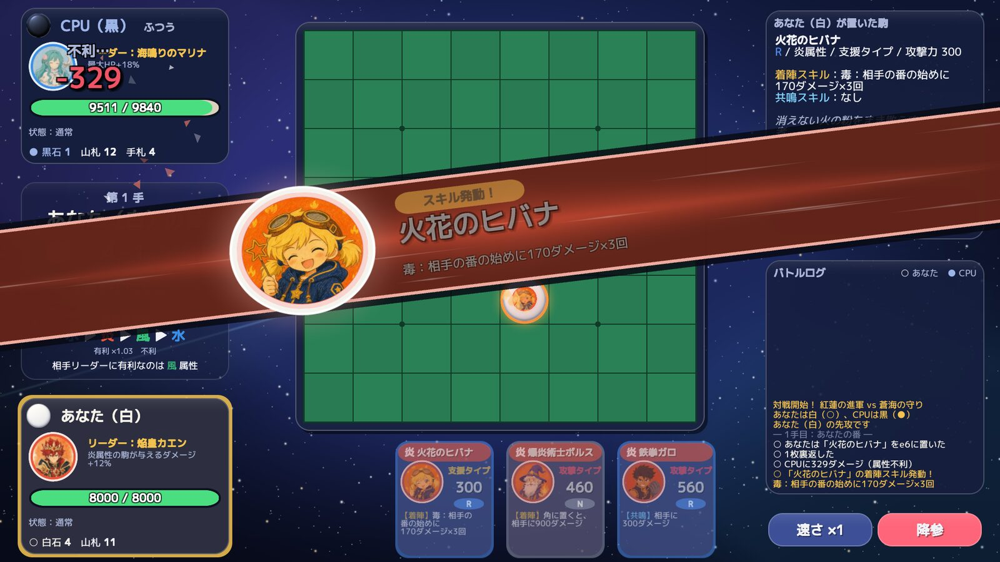
01
対戦1 手で、戦況がひっくり返る。
挟んだ枚数が多いほどダメージは跳ね上がる。置いた瞬間の着陣スキル、並んだ仲間と響き合う共鳴スキル、デッキ全体を支える旗印スキル。発動のたびにカットインが走ります。
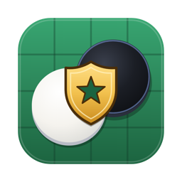
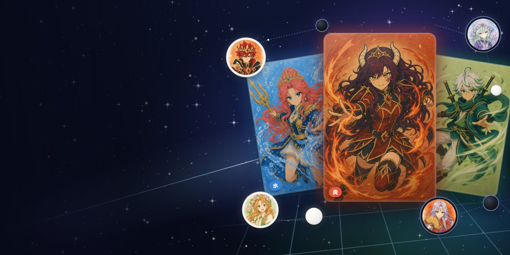
REVERSI × CHARACTER BATTLE
挟んで、裏返して、削り切れ。
1 手ごとにキャラのスキルが飛び出すリバーシで、相手の HP を 0 に。ルールはおなじみ、決まり手は自分だけのデッキ。
Windows は zip 版（展開して使う ・ 67 MB）もあります
うまく落とせない時は GitHub のリリースから
スマートフォン版はありません。パソコン（macOS・Windows）で開いてダウンロードしてください。
FEATURES
キャラクター・音楽・絵はすべてこのゲームのために作ったオリジナルです。

01
対戦挟んだ枚数が多いほどダメージは跳ね上がる。置いた瞬間の着陣スキル、並んだ仲間と響き合う共鳴スキル、デッキ全体を支える旗印スキル。発動のたびにカットインが走ります。
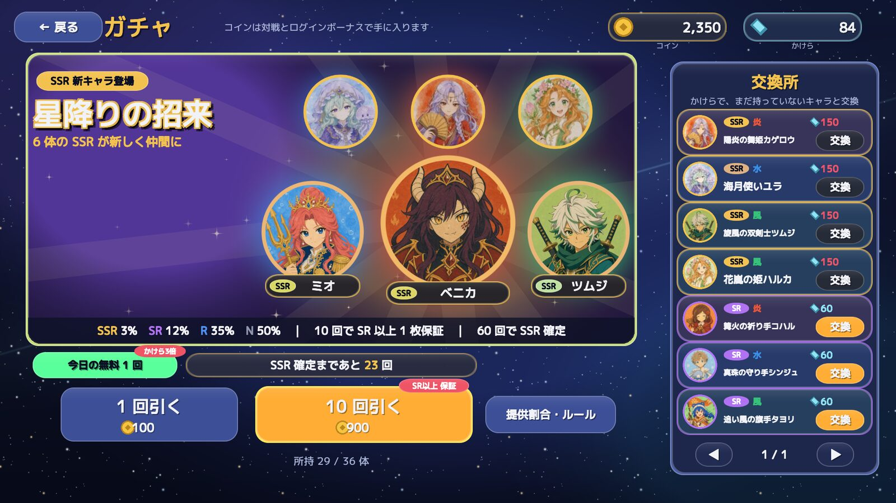
02
コレクション対戦やログインで手に入るコインでガチャを引き、仲間を集めます。現実のお金は使いません。炎・水・風の相性を読んでマイデッキを 3 つまで。迷ったら「おまかせ」でも組めます。
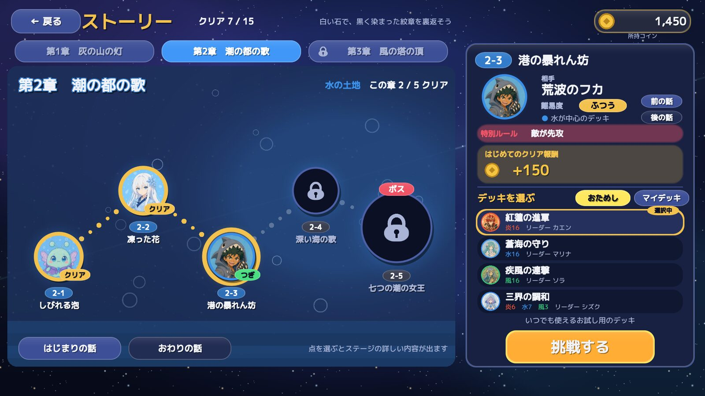
03
ストーリー炎・水・風の土地と雲の上の祭壇を巡る 4 章・20 ステージ。章のボスに勝つと、その土地の仲間が加わります。会話は飛ばしてすぐ対戦にも。
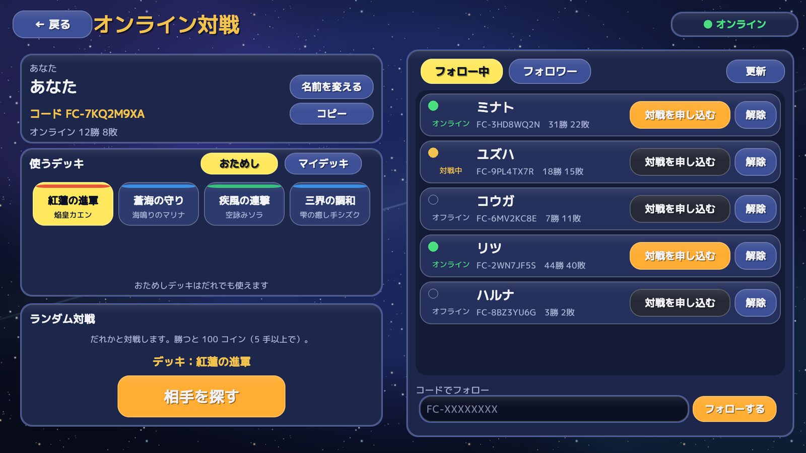
04
オンラインランダム対戦と、フォローした人との対戦。CPU 戦は やさしい・ふつう・つよい の 3 段階で、練習も腕試しも。
CHARACTERS
炎・水・風の 3 属性、42 体。ここに並ぶのはその一部です。
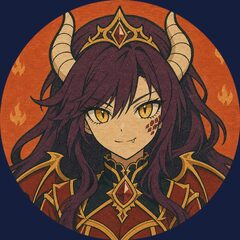
緋竜姫ベニカ炎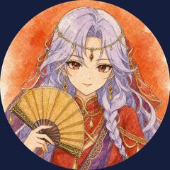
陽炎の舞姫カゲロウ炎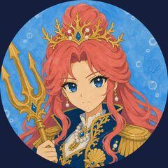
蒼潮の女王ミオ水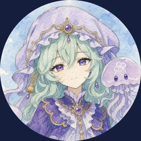
海月使いユラ水カードを長押しすると、全身の決めポーズが見られます。
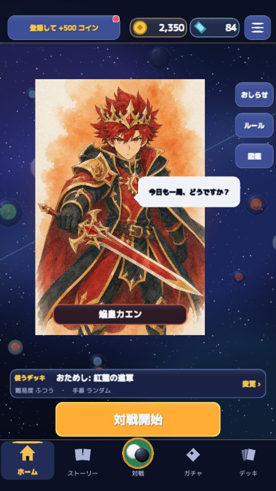
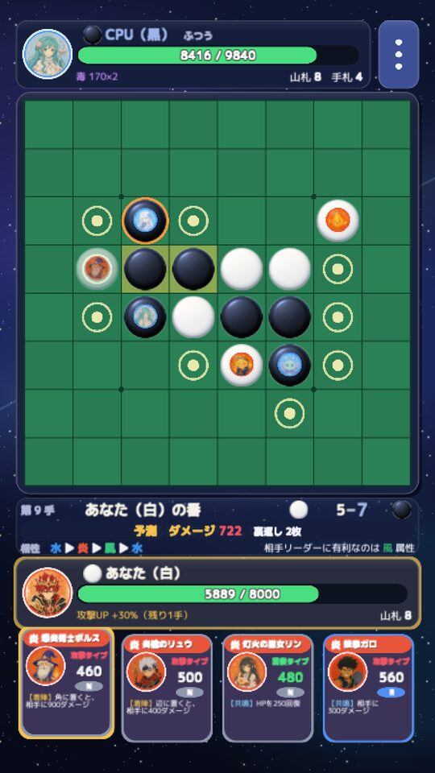
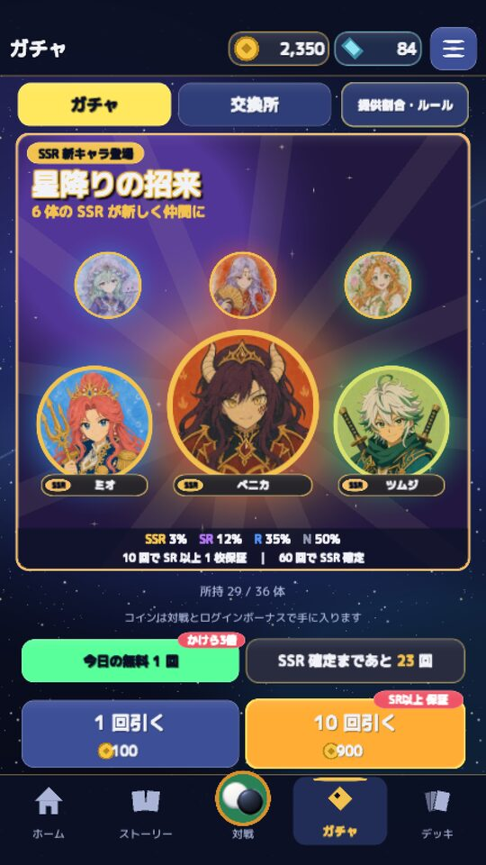
PLAY ANYWHERE
HOW TO PLAY
ルールはリバーシとほぼ同じ。あなたは白、相手は黒です。
属性の相性: 水 → 炎 → 風 → 水（矢印の先に強い）
INSTALL
macOS はダウンロードした zip を開いてアプリを入れるだけ、Windows はインストーラーで入れます。ブラウザ版はインストール不要です。
FlipCrest.app をアプリケーションフォルダに入れます。Apple の公証をしていないため、はじめて開く時だけこの手順が要ります。「このまま開く」は、開こうとしてから約 1 時間だけ出ます。
…-win-setup.exe）をダウンロードして開きます。消す時は「設定」→「アプリ」から「Flip Crest」をアンインストールします（セーブは残ります）。zip 版を使う時は、展開した FlipCrest フォルダごと書き込める場所に置き、中の FlipCrest.exe を開いてください。
動作環境: macOS 12 以降（Apple シリコンの Mac。Intel の Mac では動きません）／ Windows 10・11（64 ビット）。オンライン対戦にはインターネットへの接続が要ります。今の版はタイトル画面の右下に出ます。
FEEDBACK
「こうなったらいいな」や不具合を送ってください。名前や連絡先は要りません。
PRIVACY
遊びやすくするために、どれくらい遊ばれているかを数えています。名前・連絡先は送らず、IP アドレスは保存しません（送りすぎを防ぐ数の制限にだけ使います）。
UPDATE
2026-11-14 公開
7f49fe64cf01fa1f6a9de44560303ff1d20d26e459465d5a0d11049e69b915a6d7015392221e4ab56a3d20ef51333a5d951e6bd1f0f872dcac92656c05024721e9a31496013db0925c362f75bfe10bc763fc5a8abacb94cadbcae00068923a01